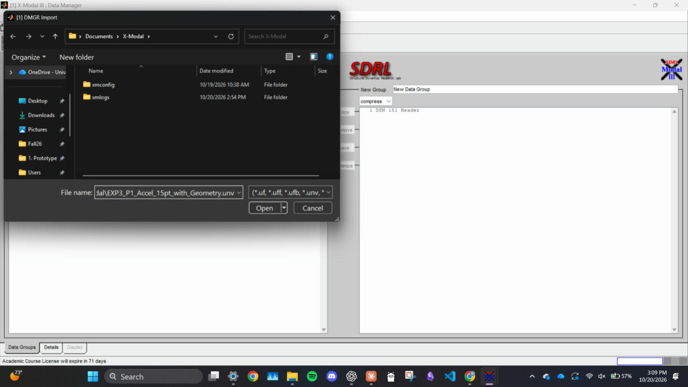
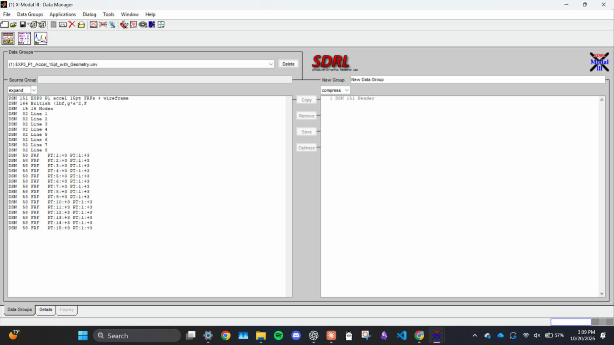
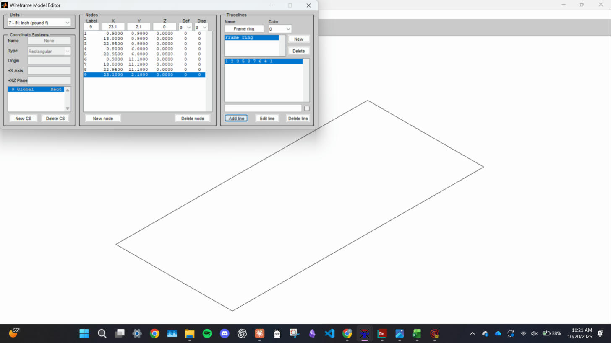
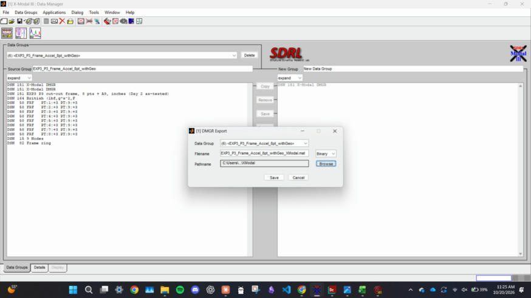
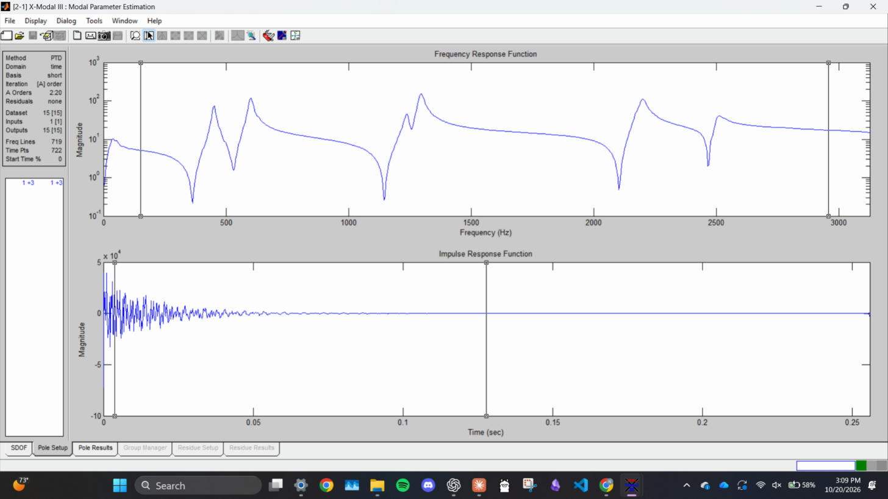
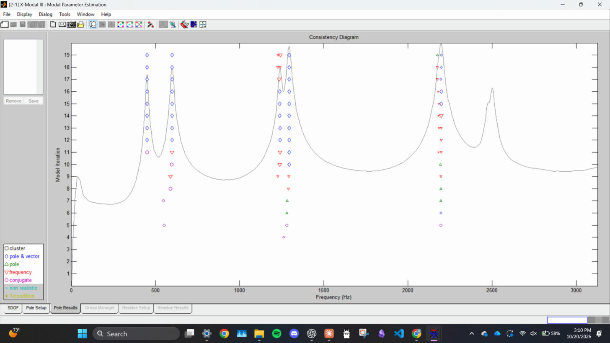
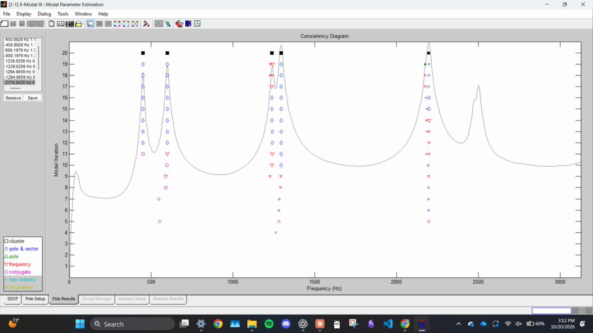
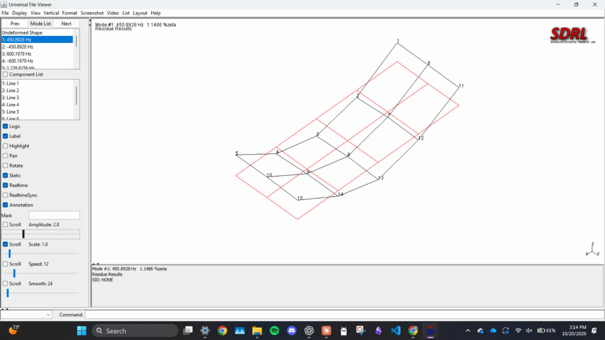
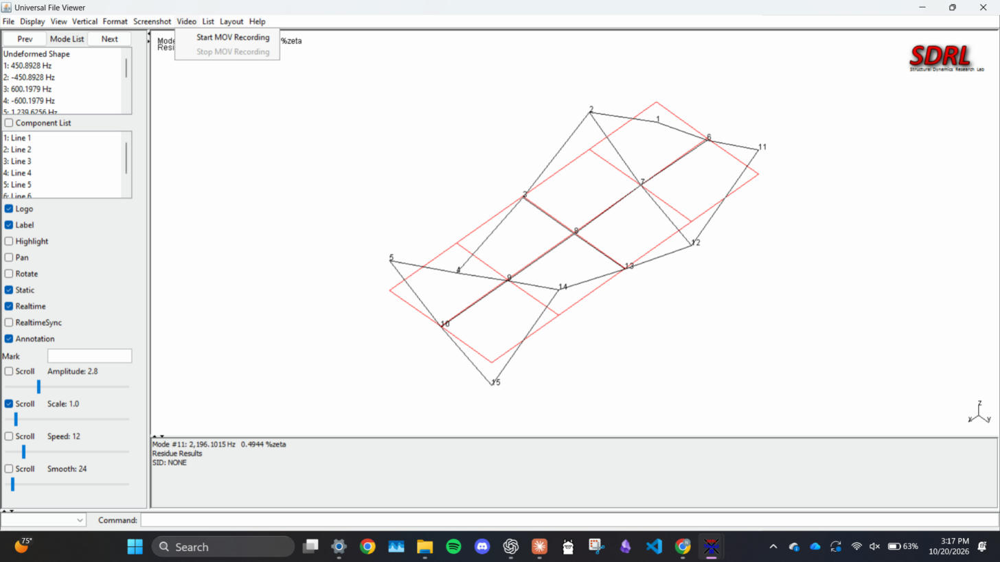
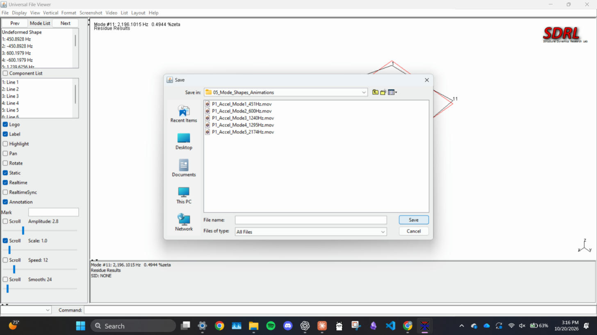

Every lab file says Response = CHAN 2, Reference = CHAN 1 because the Channel Dialog point numbers were left at their defaults. With a fixed sensor and a roving hammer, H(sensor, hit j) = H(hit j, sensor) (reciprocity), so the files are relabelled as Response = hit j (+Z), Reference = sensor node (+Z). X-Modal then sees “1 input, N outputs” and can draw a shape. In the lab, setting Point Nr / direction on the Channel Dialog before every hit avoids this step.
Data Manager → File → Import → File…
Type the full path of the .unv (or .mat) and press Open.

Switch the list from compress to expand to see every dataset: header (151), units (164), nodes (15), trace lines (82), FRFs (58) with their PT:response / PT:reference labels.

Wireframe Model Editor icon → File → Edit model. Pick the units (inch).

New node for every point (type X, Y, Z, Enter after each). Tracelines: New → type the point list → Add line.

Editor File → Save → Data Manager (also Universal File to keep a copy).

Copy the FRFs from one group and Nodes + Trace Lines from the other into the New Group. In expand view, remove any extra “bogus” units dataset (here SI: Meter came from the editor).

After removing it: one units file (British), nodes, tracelines, FRFs. Name the group and Save.

File → Export → File… → Browse → name → Save, so the merged group is kept on disk.

Click the MPE icon. Check Dataset / Inputs = 1 / Outputs = number of points. Maximize.

Dialog → Pole Setup: PTD, time, short, [A] order 2:20, start time 0 (defaults) → OK.

Drag the two frequency cursors to bracket the peaks you want (leave out the low support-bounce region).

Press the small green square (bottom right). The Consistency Diagram appears: one row per model order.

Pole Wizard icon (wand): black squares = accepted clusters. The list on the left shows each mode and its conjugate.

If a clear peak has no cluster, click one symbol in that column (we used model order 19) to add it by hand.

To save the diagram: Snapshot (camera icon) → figure Save icon → set Save as type to PNG (check it every time) → full path.

Click Save under the pole list, then the Group Manager tab: final frequencies (Hz) and damping (%).

Residue Setup tab → green square. The dashed green synthesized FRF should overlay the measured curve.

Animation icon (click again if the status bar says “Animation closed”). Maximize, View → Isometric, tick Label, Amplitude ≈ 2.8.

View menu (Default / ±X ±Y ±Z / Isometric).

Video → Start MOV Recording, wait ~4 s, Stop MOV Recording.

Name the .mov in the save dialog. Press Next twice to skip the conjugate entry, then record the next mode.
